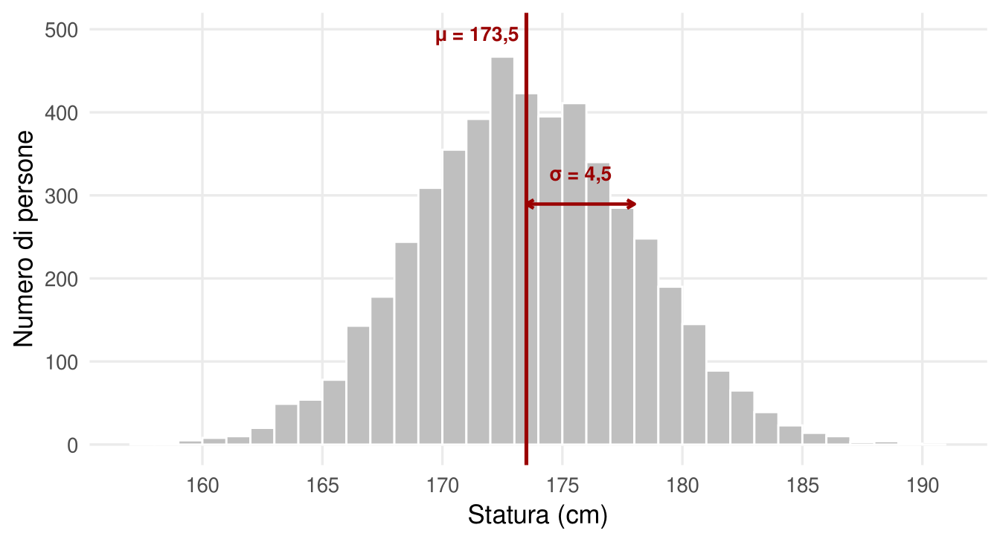
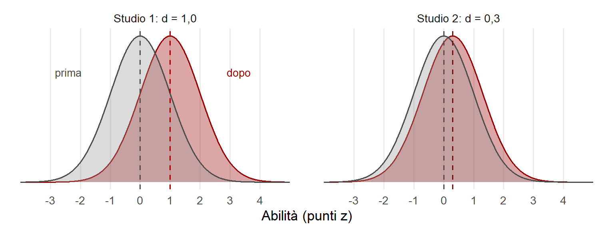
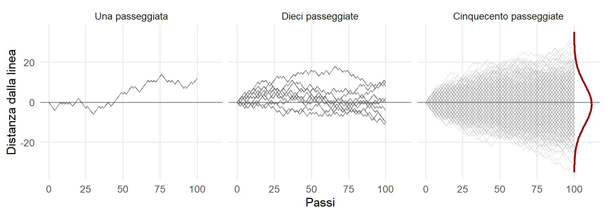
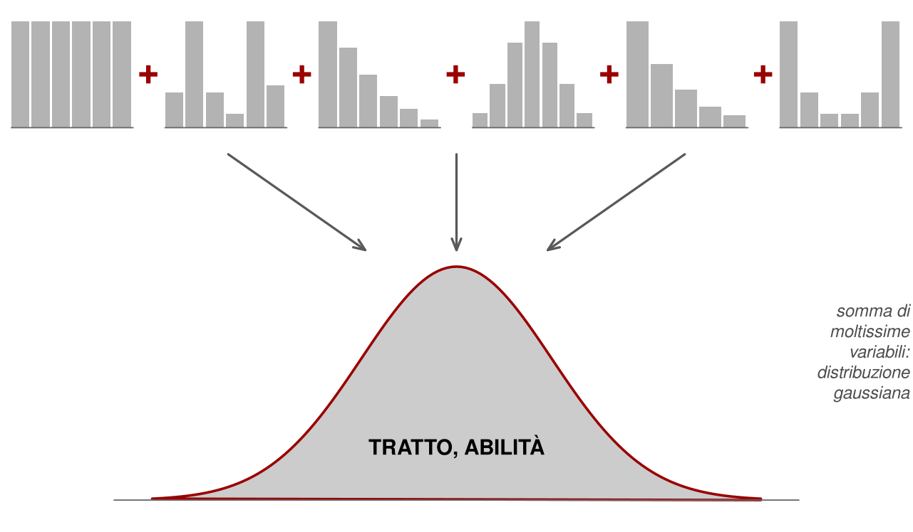
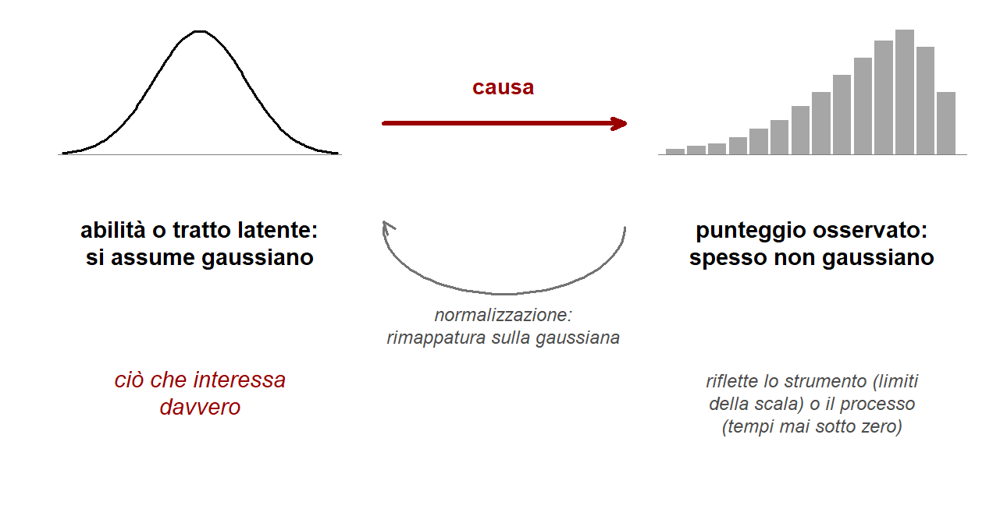

7 Distribuzioni, punti z e punteggi standardizzati
Strumenti. Le due parti «Strumenti» raccolgono le basi tecniche del libro. I loro capitoli si possono leggere da soli, in qualsiasi momento, oppure saltare: i capitoli concettuali restano comprensibili e vi rimandano, con brevi note in verde, quando un passaggio richiede uno strumento in più.
Questo capitolo tratta la curva gaussiana, i punti z e le scale dei punteggi (QI, ponderati, punti T, percentili), la grandezza di un effetto e i casi in cui la normalità è una scelta teorica più che un dato. Non presuppone nulla. Serve soprattutto per leggere un profilo di punteggi, per capire la grandezza dell’effetto Flynn e per le soglie diagnostiche del neurosviluppo.
Un QI di 130 non indica una quantità di intelligenza. Indica una posizione: due deviazioni standard sopra la media della popolazione di riferimento, un livello raggiunto o superato da circa due persone su cento. Tutta la misura psicologica funziona così. Non avendo un metro naturale per le capacità mentali, usa come unità la variabilità fra le persone.
In psicologia si lavora con variabili perché interessano cose che variano. A volte le si manipola sperimentalmente: ascoltare musica veloce o lenta mentre si studia cambia l’apprendimento? Un training di memoria di lavoro migliora la matematica dei bambini? Altre volte le si osserva correlazionalmente: essere musicisti si associa a punteggi più alti nei test cognitivi? Il tempo davanti agli schermi si associa a una minore attenzione in età prescolare? In entrambi i casi serve un modo per descrivere come si distribuiscono i valori e quanto una persona si discosta dalle altre. Questo capitolo parte dalla curva gaussiana, il modello di distribuzione su cui poggia gran parte della psicometria, e arriva alle scale che si incontrano nei referti: punti z, QI, punteggi ponderati, punti T, percentili. Poi mostra dove il modello è una buona approssimazione e dove è una scelta teorica che conviene riconoscere come tale.
7.1 Una curva che si trova ovunque
Moltissimi test e modelli statistici poggiano su un’assunzione di normalità. Il motivo è che molte variabili osservate in natura, fisiche e biologiche, si distribuiscono davvero in modo simile: la statura degli adulti, il peso alla nascita, la pressione sanguigna a riposo, le dimensioni di foglie e organi, la durata di vita delle cellule, l’attività di fondo del sistema nervoso, gli errori nelle misure ripetute di una stessa grandezza. La maggior parte dei casi si concentra attorno a un valore centrale; allontanandosi in entrambe le direzioni i casi diventano sempre più rari. Il grafico ha la forma di una campana (Figura 7.1). Col tempo è diventata un’assunzione generale, a volte un po’ troppo aprioristica, sulla distribuzione di tutto.
Questa forma è la distribuzione gaussiana, o normale. Ha tre proprietà importanti:
- è simmetrica attorno alla media;
- è descritta completamente da due parametri, la media (μ) e la deviazione standard (σ), che misura la dispersione dei valori attorno alla media;
- esistono corrispondenze fisse fra distanza dalla media, espressa in deviazioni standard, e proporzione di casi.
Circa il 68% dei casi cade entro una deviazione standard dalla media, circa il 95% entro due, quasi tutti entro tre. Oltre due deviazioni standard dalla media si trova circa il 4–5% dei casi, divisi fra le due code: circa il 2,3% per lato. Queste proporzioni valgono per qualunque gaussiana, qualunque siano media e unità di misura.
7.2 La variabilità come unità di misura
La statura si misura in centimetri, e un centimetro vale lo stesso ovunque. Le abilità mentali sono invece variabili latenti: non si vedono e non hanno un’unità naturale. Dieci risposte corrette in una prova non sono confrontabili con dieci risposte corrette in un’altra, perché dipendono dal numero e dalla difficoltà degli item. Non esistendo una quantità fisica da misurare, si usa come metrica la variabilità stessa.
Si esprime cioè ogni punteggio come distanza dalla media della popolazione di riferimento, usando la deviazione standard come unità. Questa trasformazione si chiama standardizzazione e produce i punti z:
\[ z = \frac{x - \mu}{\sigma} \]
Un punto z di +1 indica un punteggio una deviazione standard sopra la media; −2 due deviazioni standard sotto. Lo zero è la media. La metrica non dice più «quanto» in senso assoluto, ma «quanto distante dagli altri». La distanza dalla media è diventata la metrica delle differenze individuali.
Quasi tutti i punteggi usati nei test psicologici sono punti z riscalati, cioè moltiplicati per una costante e spostati per evitare decimali e numeri negativi (Figura 7.2):
- QI e indici compositi delle batterie di intelligenza: media 100, deviazione standard 15. Un QI di 115 corrisponde a z = +1.
- Punteggi ponderati dei singoli subtest: media 10, deviazione standard 3.
- Punti T, comuni nei questionari clinici: media 50, deviazione standard 10.
- Percentili: la percentuale di persone della popolazione di riferimento con un punteggio inferiore o uguale.
![Curva a campana divisa in fasce: 34,1% fra la media e una deviazione standard da ciascun lato, 13,6% fra una e due, 2,1% fra due e tre. Sopra, parentesi indicano 68,2% entro una deviazione standard, 95,4% entro due e 99,7% entro tre. Sotto, sei righe di corrispondenze: punti z da meno 3 a più 3, QI da 55 a 145, punteggi ponderati da 1 a 19, punti T da 20 a 80, percentili da 0,1 a 99,9, ed etichette per il QI: disabilità intellettiva, funzionamento limite, nella norma, fascia superiore, plusdotazione.](distribuzioni-e-punteggi_files/figure-html/fig-scale-1.png)
I percentili sono molto usati in clinica perché sono intuitivi e robusti alle violazioni della normalità. Hanno però un limite: non sono una scala a intervalli uguali. Al centro della distribuzione una piccola differenza di abilità sposta molti percentili; nelle code una grande differenza ne sposta pochi. Passare dal 50° all’84° percentile richiede una deviazione standard; passare dall’84° al 98° ne richiede un’altra. Per questo non ha senso fare la media dei percentili, e nella ricerca si preferiscono i punti z.
La stessa metrica servirà a leggere le correlazioni: nel capitolo sulla correlazione la previsione da una misura all’altra si scrive proprio in punti z.
7.3 Essere rari
Definire i punteggi come distanze dalla media ha una conseguenza fondamentale: la rarità statistica diventa, di per sé, un’informazione potenzialmente rilevante sul piano clinico.
La disabilità intellettiva non è definita da un livello di funzionamento basso in assoluto, ma basso rispetto a quello della popolazione, insieme a difficoltà nel comportamento adattivo. Una società organizza scuole, lavori e servizi attorno a ciò che la maggior parte delle persone riesce a fare: aspettative e requisiti sono tarati sulla media. Lo stesso vale per la dislessia: la scuola è costruita attorno a un ritmo medio di apprendimento della lettura, e chi ne è molto distante resta indietro. E per l’ADHD: livelli di attenzione o di impulsività diventano problematici soprattutto quando divergono da ciò che il contesto richiede.
Il ragionamento vale anche all’altro estremo. Un’abilità molto superiore alla media è rara, e la rarità può comportare un disallineamento con il contesto: un programma scolastico troppo lento, interessi poco condivisi con i coetanei. Essere statisticamente insoliti non è una diagnosi. È però una ragione per guardare meglio.

7.4 Da dove nasce la campana
Perché tante grandezze diverse assumono la stessa forma? Un’immagine utile è la passeggiata di una persona ubriaca che cerca di seguire una linea retta. A ogni passo barcolla un po’ a destra o un po’ a sinistra, a caso. Dopo un chilometro dove si troverà? Probabilmente non lontano dalla linea, perché molte deviazioni si compensano. Talvolta, per una serie di sbandate nella stessa direzione, sarà parecchio distante. Ripetendo l’esperimento con moltissime passeggiate, le posizioni finali formano una campana (Figura 7.4). Un semplice accumularsi di effetti, che si sommano uno dopo l’altro tirando in direzioni diverse, produce alla fine una gaussiana. Lo stesso principio è reso visibile dalla tavola di Galton, in cui palline che rimbalzano a caso su file di chiodi si accumulano in una distribuzione a campana.

Il principio ha un nome: teorema del limite centrale. La somma di moltissime variabili diverse, ciascuna con un piccolo effetto, tende a distribuirsi in modo gaussiano, quasi indipendentemente da come sono distribuite le singole variabili (Figura 7.5). Ecco perché la gaussiana domina in psicologia: si assume che tratti, abilità e stati mentali siano il risultato finale di moltissimi processi additivi. Non dipenderebbero da una o poche cause, ma da innumerevoli fattori, piccoli o grandi, che si sommano.

Per l’intelligenza l’ipotesi additiva non è solo un’analogia. All’inizio era soltanto un’assunzione, ma oggi si comincia a vedere che cosa c’è sotto. Gli studi genomici stimano che le differenze genetiche associate al fattore generale dipendano da migliaia di varianti, ciascuna con un effetto minuscolo, di cui solo una piccola parte è stata identificata con certezza (Davies et al., 2018; Savage et al., 2018). A queste si aggiungono innumerevoli influenze ambientali, neurobiologiche, educative, motivazionali e situazionali, compresa un po’ di casualità nelle risposte a un test. Le abilità e le disabilità cognitive sono quindi poligeniche, perché molti geni influiscono sullo stesso tratto, e per questo variano lungo dimensioni continue; e sono pleiotropiche, perché gli stessi geni influiscono su molte abilità, e per questo le abilità sono correlate fra loro (Kovas & Plomin, 2006). La poligenicità è stata perfino proposta come «legge» generale della genetica del comportamento: qualunque tratto comportamentale variabile dipende da moltissime varianti, ciascuna responsabile di una quota minima delle differenze (Chabris et al., 2015).
7.5 Quando i dati non sono gaussiani
La scelta di modellare abilità, tratti e stati mentali come gaussiani è nata molto prima che se ne conoscessero le basi genetiche o ambientali, perché sembrava naturale. Le evidenze successive l’hanno resa più plausibile, ma resta essenzialmente una scelta teorica. E c’è un colpo di scena: molti dati psicologici osservati non hanno affatto la forma di una campana, e non per ragioni profonde. Dipende dallo strumento di misura. Un test con pochi item facili produce molti punteggi massimi; uno con item difficili produce molti zeri. I tempi di risposta non possono scendere sotto lo zero e hanno una lunga coda di risposte lente. Le risposte su scala Likert sono poche categorie ordinate. Nei test cognitivi è frequente osservare distribuzioni dei punteggi grezzi asimmetriche, con un accumulo vicino al punteggio massimo.
Chi analizza i dati ha diverse strade. Può ignorare il problema e assumere comunque la normalità, sperando che non faccia danni: è la scelta più frequente, spesso per mancanza di alternative conosciute. Può usare test non parametrici, che però limitano fortemente le analisi possibili, per esempio con interazioni, effetti casuali o previsioni. Può usare modelli statistici che descrivono correttamente la distribuzione della risposta osservata, come i modelli lineari generalizzati. Oppure, se possibile, può raccogliere i dati con strumenti validati, standardizzati e normalizzati: è la prassi storica dei test di intelligenza.
![Tre grafici a barre sottili. Il primo mostra le frequenze dei punteggi grezzi da 0 a 30, addensate verso il massimo. Il secondo, in punti z lineari, ha la stessa forma asimmetrica e barre equidistanti fra circa meno 4 e più 1, con note sui punteggi estremi bassi troppo frequenti e sui punteggi alti non raggiungibili. Il terzo, in punti z normalizzati, ha barre fitte e basse a sinistra che salgono verso lo zero, poi poche barre alte e sempre più distanziate a destra: l'ultimo punteggio grezzo, il massimo, finisce oltre più 1,5.](distribuzioni-e-punteggi_files/figure-html/fig-normalizzazione-1.png)
Le procedure di trasformazione sono due (Figura 7.6). La trasformazione lineare in punti z sottrae la media e divide per la deviazione standard. È semplice e molto usata, ma conserva la forma originale: se i punteggi grezzi sono asimmetrici, lo sono anche i punti z, e le corrispondenze fra z e percentili non valgono più. Non è l’ideale, ma spesso si fa semplicemente così. La normalizzazione assegna invece a ogni punteggio grezzo il punto z corrispondente al suo percentile nella gaussiana. Il risultato si avvicina alla campana, ma non la riproduce: i punteggi grezzi restano pochi valori discreti, e vicino al tetto ciascuno raccoglie molte persone. Dove i punteggi sono rari, i punti z normalizzati si addensano; dove pochi punteggi molto frequenti devono coprire tutta la coda destra, si distanziano, e il massimo della prova può valere appena una o due deviazioni standard sopra la media. Una prova con effetto tetto, normalizzata, resta poco capace di distinguere fra le persone più abili. La normalizzazione è preferibile quando possibile, ma richiede competenze più avanzate ed è, di nuovo, una scelta teorica.
La normalizzazione è la procedura tipica delle tabelle normative dei test di intelligenza. Ogni tabella di conversione da punteggio grezzo a ponderato è, in sostanza, una normalizzazione calcolata separatamente per ogni fascia d’età o di scolarità: un certo numero di risposte corrette viene tradotto nel ponderato corrispondente alla stessa posizione nella distribuzione dei coetanei. In fondo a una tabella del genere c’è un’ipotesi esplicita (Figura 7.7): l’abilità latente, ciò che interessa davvero, è distribuita in modo gaussiano e causa il punteggio osservato, la cui forma irregolare riflette le caratteristiche dello strumento, come i limiti inferiore e superiore della scala, o del processo, come i tempi che non possono scendere sotto zero.

7.6 Che tipo di scala?
Le scale di misura si distinguono per le operazioni che consentono.
| Scala | Che cosa si può dire | Esempi |
|---|---|---|
| Categoriale | Uguale o diverso | Diagnosi sì/no; gruppo sperimentale o di controllo |
| Ordinale | Maggiore o minore | Risposta a un item Likert |
| A intervalli | Distanze uguali; zero arbitrario; si può sommare e sottrarre | Temperatura in gradi Celsius; punti z ben costruiti |
| A rapporti | Anche «il doppio» e «la metà»; zero assoluto | Tempi; numero di errori; somma di risposte corrette; temperatura in kelvin |
Il percorso tipico della misura psicologica è curioso. Si parte spesso da dati ordinali, come le risposte agli item di un questionario, o da dati a rapporti, come il numero di risposte corrette. Poi si convertono in punti z, che sono una scala a intervalli. Il motivo è sempre lo stesso: ciò che interessa è una variabile latente, il cui zero è ignoto. Ecco perché non ha senso dire che una persona con QI 140 è «il doppio più intelligente» di una con QI 70. Lo zero della scala non corrisponde all’assenza di intelligenza.
7.7 Oltre la gaussiana
La gaussiana deriva dal teorema del limite centrale: moltissime concause che si sommano. Alcune distribuzioni, però, nascono da processi diversi. Due eccezioni sono rilevanti.
La prima è la mistura. Il peso alla nascita è approssimativamente gaussiano, ma con un eccesso di neonati sottopeso dovuto a condizioni patologiche che agiscono come una popolazione a sé. L’intelligenza nella popolazione generale mostra un fenomeno simile: la coda inferiore contiene più casi del previsto, perché sindromi genetiche come quella di Down, mutazioni rare e danni neurologici precoci producono effetti molto grandi. In teoria anche questi effetti si sommano agli altri, ma sono così forti da formare un gruppo a parte.
La seconda è la distribuzione log-normale, prodotta da fattori che si moltiplicano anziché sommarsi. Si pensi a un esito sociale come il reddito: se istruzione, salute, opportunità, impegno e abilità interagiscono in modo moltiplicativo, basta che uno manchi quasi del tutto per azzerare il risultato, mentre una combinazione favorevole di tutti produce valori estremi. Da qui code molto lunghe; meccanismi in cui chi vince prende tutto, o le rendite che si accumulano, accentuano la concentrazione di ricchezza. Questo modello è più adatto agli esiti sociali che alle caratteristiche psicologiche di base.
Come sappiamo che l’intelligenza è il prodotto di effetti additivi e non moltiplicativi? In realtà non lo sappiamo con certezza. Le distribuzioni approssimativamente simmetriche dei punteggi grezzi nei test tarati sono un indizio debole, perché gli item vengono selezionati proprio per ottenere quella simmetria. Per alcune abilità, come lettura e matematica, sono stati ipotizzati meccanismi cumulativi, in cui chi parte avvantaggiato accumula vantaggi ulteriori. Qualcosa di simile, pur modesto, è stato proposto anche per l’intelligenza, attraverso il legame con la scolarizzazione. La gaussiana resta il modello di riferimento: utile, plausibile, ma non un fatto di natura.